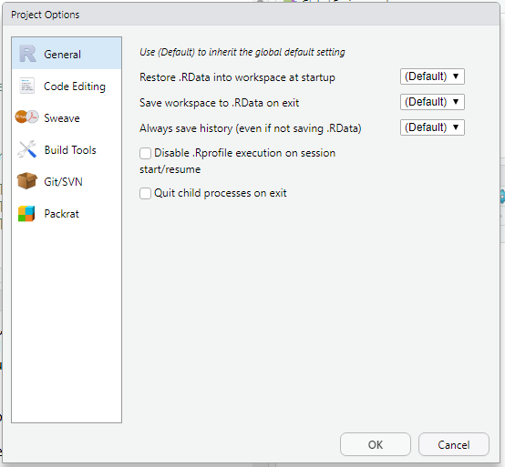
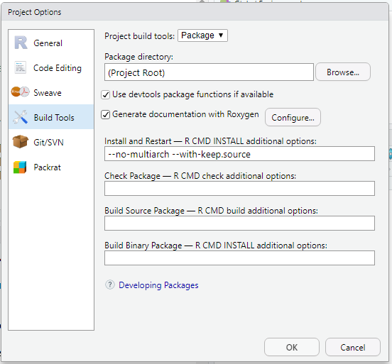

3 Configurando o Rstudio
Uma das configurações que é necessária para facilitar a documentação do pacote e configurando o Rstudio para criar os arquivos .Rd da pasta man através do pacote roxygen2
Ir em “tools”

Ir em Build tools

Marcar a opção Install and Restart